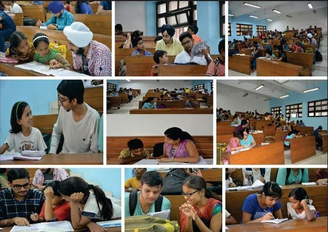

In this noble project, the students of PEC teach the children of the helping staff of the college, mainly mess workers, security guards, cleaning staff, etc. It is a semester long project and an integral part of NSS,PEC. The project covers the students of all classes and children are taught five days a week. Their teaching involves Content Teaching, Interactive sessions, Test series and Quizzes with the help of videos and presentations. All records are properly maintained and attendance is taken regularly. Regular teaching is an integral part. From time to time, special events such as movies are organized for the children to offer them a break from the studies and keep them refreshed. This project has time and again proved to be the most successful venture of NSS.